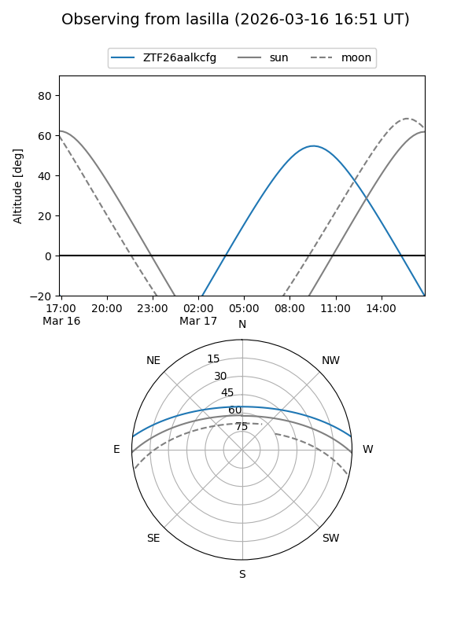
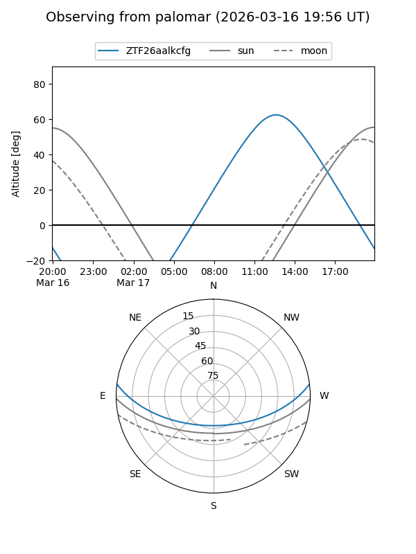

ZTF26aalkcfg
Target ZTF26aalkcfg at 2026-03-16 13:05
Aliases and brokers:
FINK: link
Lasair: link
ALeRCE: link
alt names
ZTF26aalkcfg (ztf,fink_ztf)
Coordinates:
equatorial (ra, dec) = 247.1082,+5.99975
equatorial (HMS+DMS) = 16:28:25.98,+05:59:59.09
galactic (l, b) = (20.9065,+34.38867)
Flags:
Photometry:
last ztfg=19.55
1 ztfg detections
Lightcurve
Visibility


Additional plots